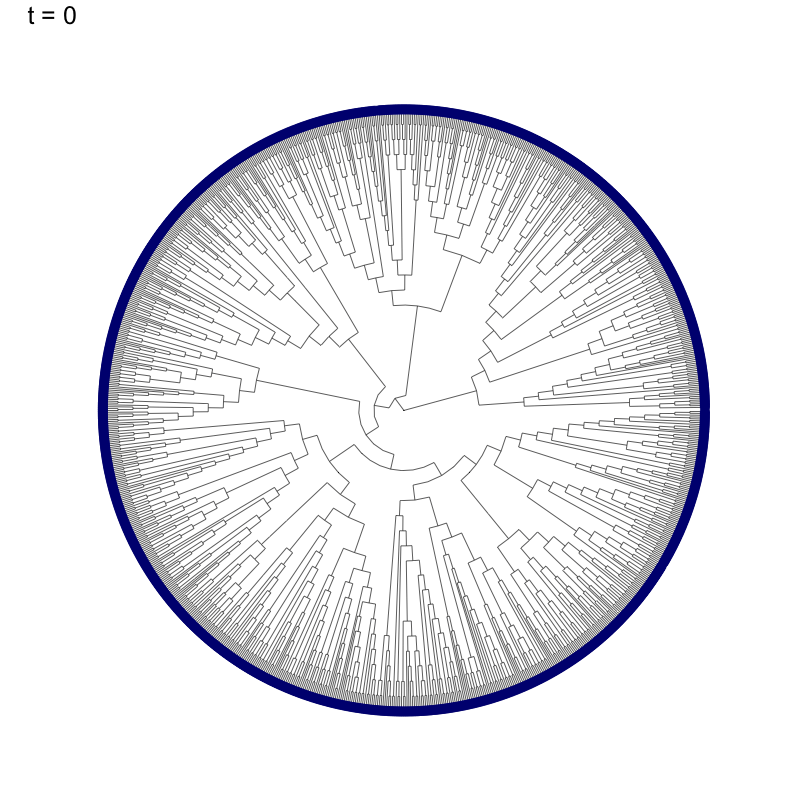
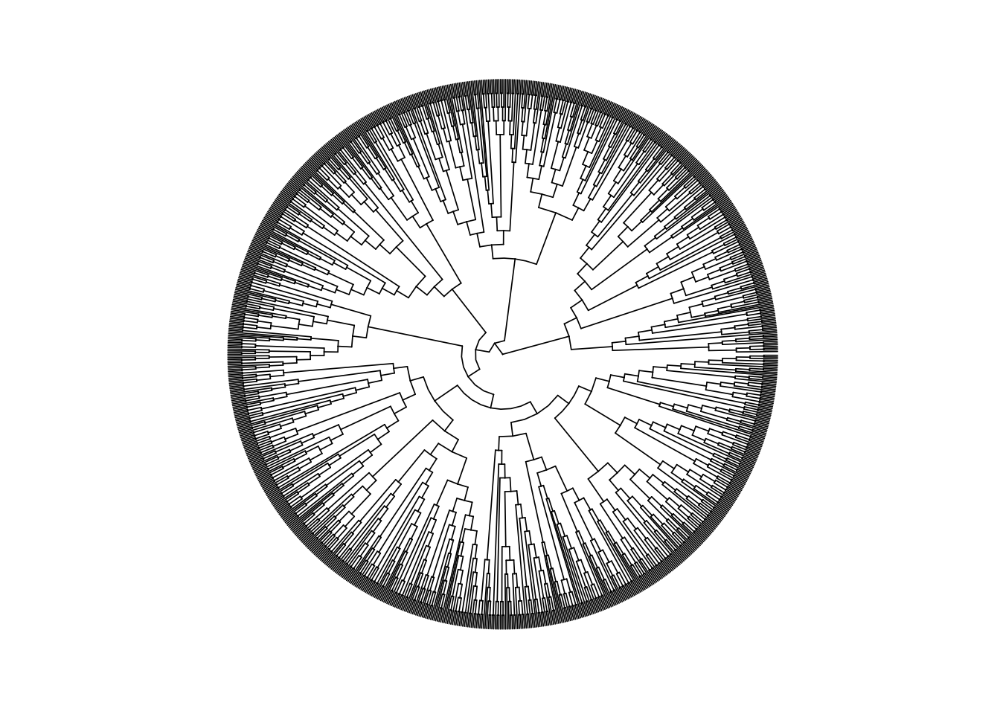
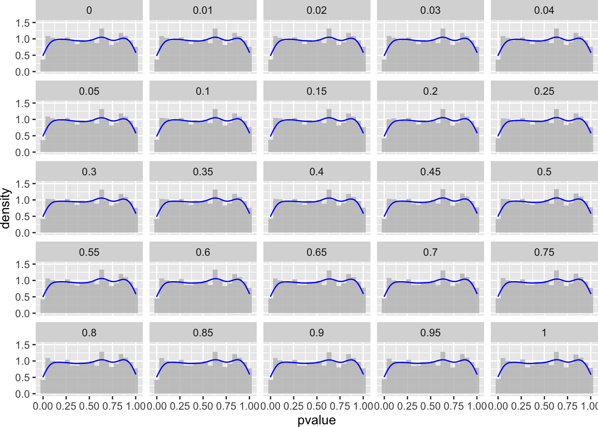
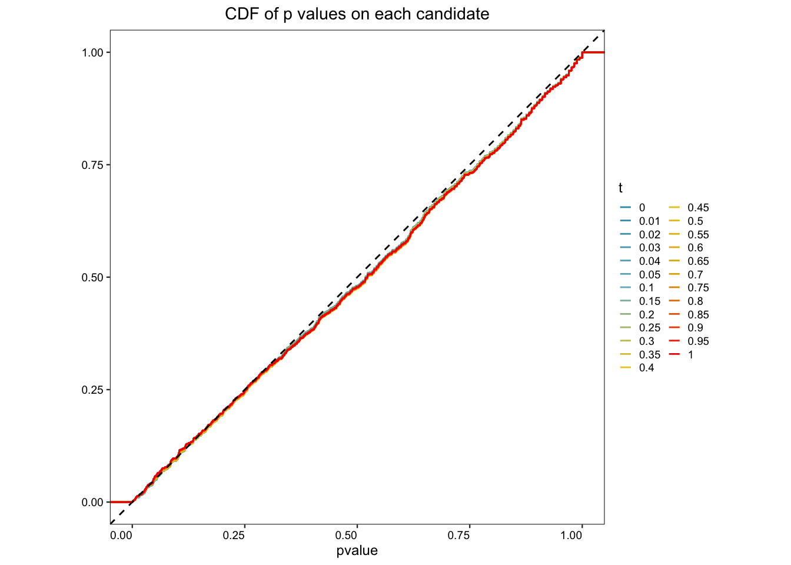

Last updated: 2020-04-23
Checks: 7 0
Knit directory: treeclimbR_toy_example/
This reproducible R Markdown analysis was created with workflowr (version 1.5.0). The Checks tab describes the reproducibility checks that were applied when the results were created. The Past versions tab lists the development history.
Great! Since the R Markdown file has been committed to the Git repository, you know the exact version of the code that produced these results.
Great job! The global environment was empty. Objects defined in the global environment can affect the analysis in your R Markdown file in unknown ways. For reproduciblity it’s best to always run the code in an empty environment.
The command set.seed(20200315) was run prior to running the code in the R Markdown file. Setting a seed ensures that any results that rely on randomness, e.g. subsampling or permutations, are reproducible.
Great job! Recording the operating system, R version, and package versions is critical for reproducibility.
Nice! There were no cached chunks for this analysis, so you can be confident that you successfully produced the results during this run.
Great job! Using relative paths to the files within your workflowr project makes it easier to run your code on other machines.
Great! You are using Git for version control. Tracking code development and connecting the code version to the results is critical for reproducibility. The version displayed above was the version of the Git repository at the time these results were generated.
Note that you need to be careful to ensure that all relevant files for the analysis have been committed to Git prior to generating the results (you can use wflow_publish or wflow_git_commit). workflowr only checks the R Markdown file, but you know if there are other scripts or data files that it depends on. Below is the status of the Git repository when the results were generated:
Ignored files:
Ignored: .DS_Store
Ignored: .Rhistory
Ignored: .Rproj.user/
Note that any generated files, e.g. HTML, png, CSS, etc., are not included in this status report because it is ok for generated content to have uncommitted changes.
These are the previous versions of the R Markdown and HTML files. If you’ve configured a remote Git repository (see ?wflow_git_remote), click on the hyperlinks in the table below to view them.
| File | Version | Author | Date | Message |
|---|---|---|---|---|
| Rmd | 49a1b4d | fionarhuang | 2020-04-23 | customize the website |
| html | 76414e2 | fionarhuang | 2020-04-23 | Build site. |
| Rmd | 9ae2f14 | fionarhuang | 2020-04-23 | publish Rmd files |
knitr::opts_chunk$set(echo = TRUE, warning=FALSE, message = FALSE)suppressPackageStartupMessages({
library(ggplot2)
library(ggtree)
library(dplyr)
library(treeclimbR)
library(TreeSummarizedExperiment)
library(ape)
library(TreeHeatmap)
library(ggnewscale)
library(wesanderson)
library(scales)
library(gganimate)
})A random tree is generated.
# random tree
set.seed(1)
n <- 1000
tr <- rtree(n)A count table is generated with each column sampled from the same distribution. Entities in rows and samples in columns. Samples are assigned to two groups.
# generate a random probability of leaves
p <- runif(n = n, 0, 1)
p <- p/sum(p)
names(p) <- tr$tip.label
# group
nSam <- c(30, 30)
gr <- rep(LETTERS[1:2], nSam)
# counts
count <- rmultinom(n = sum(nSam), size = 10000, prob = p)
rownames(count) <- names(p)
colnames(count) <- paste(gr, seq_len(sum(nSam)), sep = "_")The tree and count table are stored as a TSE object.
lse <- TreeSummarizedExperiment(assays = list(count),
colData = data.frame(group = gr),
rowTree = tr)# all nodes
all_node <- showNode(tree = tr, only.leaf = FALSE)
tse <- aggValue(x = lse, rowLevel = all_node, FUN = sum)Wilcoxon sum rank test is run on all nodes.
# wilcox.test
test.func <- function (X, Y) {
Y <- as.numeric(factor(Y))
obj <- apply(X, 1, function(x) {
p.value <- suppressWarnings(wilcox.test(x ~ Y)$p.value)
e.sign <- sign(mean(x[Y == 2]) - mean(x[Y == 1]))
c(p.value, e.sign)
})
return(list(p.value=obj[1, ], e.sign=obj[2, ]))
}
Y <- colData(tse)$group
X <- assays(tse)[[1]]
resW <- test.func(X,Y)
outW <- data.frame(node = rowLinks(tse)$nodeNum,
pvalue = resW$p.value,
sign = resW$e.sign)treeclimbR# get candidates
cand <- getCand(tree = rowTree(tse), score_data = outW,
node_column = "node", p_column = "pvalue",
threshold = 0.05,
sign_column = "sign", message = TRUE)# evaluate candidates
best <- evalCand(tree = rowTree(tse), levels = cand$candidate_list,
score_data = outW, node_column = "node",
p_column = "pvalue", sign_column = "sign")
outB <- topNodes(object = best, n = Inf, p_value = 0.05)
infoCand(object = best) t upper_t is_valid method limit_rej level_name best rej_leaf rej_node
1 0.00 0 TRUE BH 0.05 0 TRUE 0 0
2 0.01 0 FALSE BH 0.05 0.01 FALSE 0 0
3 0.02 0 FALSE BH 0.05 0.02 FALSE 0 0
4 0.03 0 FALSE BH 0.05 0.03 FALSE 0 0
5 0.04 0 FALSE BH 0.05 0.04 FALSE 0 0
6 0.05 0 FALSE BH 0.05 0.05 FALSE 0 0
7 0.10 0 FALSE BH 0.05 0.1 FALSE 0 0
8 0.15 0 FALSE BH 0.05 0.15 FALSE 0 0
9 0.20 0 FALSE BH 0.05 0.2 FALSE 0 0
10 0.25 0 FALSE BH 0.05 0.25 FALSE 0 0
11 0.30 0 FALSE BH 0.05 0.3 FALSE 0 0
12 0.35 0 FALSE BH 0.05 0.35 FALSE 0 0
13 0.40 0 FALSE BH 0.05 0.4 FALSE 0 0
14 0.45 0 FALSE BH 0.05 0.45 FALSE 0 0
15 0.50 0 FALSE BH 0.05 0.5 FALSE 0 0
16 0.55 0 FALSE BH 0.05 0.55 FALSE 0 0
17 0.60 0 FALSE BH 0.05 0.6 FALSE 0 0
18 0.65 0 FALSE BH 0.05 0.65 FALSE 0 0
19 0.70 0 FALSE BH 0.05 0.7 FALSE 0 0
20 0.75 0 FALSE BH 0.05 0.75 FALSE 0 0
21 0.80 0 FALSE BH 0.05 0.8 FALSE 0 0
22 0.85 0 FALSE BH 0.05 0.85 FALSE 0 0
23 0.90 0 FALSE BH 0.05 0.9 FALSE 0 0
24 0.95 0 FALSE BH 0.05 0.95 FALSE 0 0
25 1.00 0 FALSE BH 0.05 1 FALSE 0 0# number of nodes in each candidate
candL <- cand$candidate_list
unlist(lapply(candL, length)) 0 0.01 0.02 0.03 0.04 0.05 0.1 0.15 0.2 0.25 0.3 0.35 0.4 0.45 0.5 0.55
998 998 998 998 998 998 997 997 995 993 991 990 990 987 987 986
0.6 0.65 0.7 0.75 0.8 0.85 0.9 0.95 1
982 979 978 978 976 976 973 969 964 # tree
leaf <- showNode(tree = tr, only.leaf = TRUE)
nleaf <- length(leaf)
# the candidate list
t <- names(candL)
nt <- length(candL)
mm <- matrix(NA, nrow = nleaf, ncol = nt)
colnames(mm) <- paste("row_", seq_len(nt), sep = "")
#
path <- matTree(tree = tr)
r1 <- lapply(leaf, FUN = function(x) {
which(path == x, arr.ind = TRUE)[, "row"]
})
for (j in seq_len(nt)) {
rj <- lapply(candL[[j]], FUN = function(x) {
which(path == x, arr.ind = TRUE)[, "row"]
})
for (i in seq_len(nleaf)) {
# leaf i: which row of `path`
ni <- r1[[i]]
ul <- lapply(rj, FUN = function(x) {
any(ni %in% x)
})
# the ancestor of leaf i: which node in candidate j
ll <- which(unlist(ul))
if (length(ll) == 1) {
mm[i, j] <- ll
}
}}
nn <- lapply(seq_len(ncol(mm)), FUN = function(x) {
mx <- mm[, x]
xx <- candL[[x]][mx]
cbind.data.frame(xx, rep(t[x], length(xx)),
stringsAsFactors = FALSE)
})
df <- do.call(rbind.data.frame, nn)
colnames(df) <- c("node", "threshold")
head(df)
fig_1 <- ggtree(tr = tr, layout = "circular",
branch.length = "none", size = 0.3)
pd <- df %>%
left_join(y = fig_1$data, by = "node") %>%
select(threshold, x, y) %>%
mutate(t = factor(threshold, levels = names(candL)))
gif_neg <- fig_1 +
geom_point(data = pd, aes(x, y),
color = "navy", size = 4) +
theme(plot.title = element_text(size = 25)) +
transition_states(states = t,
state_length = 8,
transition_length = 2,
wrap = FALSE) +
shadow_wake(wake_length = 0.1, alpha = FALSE,
wrap = FALSE) +
labs(title = "t = {closest_state}") +
enter_fade() +
exit_fade()
anim_save("output/negative_cands.gif", gif_neg, height = 800, width = 800)
Nodes that are detected to be differential abundant (DA) between two groups are labeled as red points. Here, treeclimbR doesn’t detect any nodes.
# detected nodes
(loc <- outB$node)integer(0)fig_1 <- ggtree(tr = tr, layout = "circular",
branch.length = "none", size = 0.3)
fig_1 +
geom_point2(aes(subset = node %in% loc), color = "red")
| Version | Author | Date |
|---|---|---|
| 76414e2 | fionarhuang | 2020-04-23 |
pL <- lapply(seq_along(candL), FUN = function(x) {
p.x <- outW[outW$node %in% candL[[x]], ][["pvalue"]]
df.x <- cbind.data.frame(pvalue = p.x, t = names(candL)[x])
return(df.x)
})
df <- do.call(rbind, pL)
ggplot(df, aes(x = pvalue, y = ..density..)) +
geom_histogram(bins = 20, fill = "grey", alpha = 0.8) +
geom_density(color = "blue") +
facet_wrap(. ~ t, nrow = 6) +
theme(plot.margin = unit(c(0, 0, 0, 0), "cm")) +
ylim(0, 1.5)
| Version | Author | Date |
|---|---|---|
| 76414e2 | fionarhuang | 2020-04-23 |
prettify <- theme_bw(base_size = 9) + theme(
aspect.ratio = 1,
#plot.margin = unit(c(0, 0, 0.2, 0), "cm"),
panel.grid = element_blank(),
panel.spacing = unit(0, "lines"),
axis.text = element_text(color = "black"),
axis.text.x = element_text(angle = 45, hjust = 1),
legend.key.size= unit(1.5, "mm"),
plot.title = element_text(hjust = 0.5),
legend.text = element_text(size = 7),
legend.position="bottom",
legend.margin = margin(0, 0, 0, 0),
legend.box.margin=margin(-5,-5,-10,-5),
strip.background = element_rect(colour = "black", fill = "gray90"),
strip.text.x = element_text(color = "black", size = 8),
strip.text.y = element_text(color = "black", size = 8))
pal <- wes_palette("Zissou1", 25, type = "continuous")
fig <- ggplot(df, aes(x= pvalue, group = t, color = t)) +
stat_ecdf(geom = "step") +
geom_abline(slope = 1, intercept = 0, linetype = "dashed") +
scale_color_manual(values = pal) +
prettify +
labs(y = NULL,
title = "CDF of p values on each candidate") +
theme(legend.position = "right",
legend.key.size= unit(3, "mm"),
legend.box.margin=margin(0,0,0,0),
axis.text.x = element_text(angle = 0, hjust = 1))
fig
| Version | Author | Date |
|---|---|---|
| 76414e2 | fionarhuang | 2020-04-23 |
ggsave(filename = "output/Supplementary_negative_unif.eps",
width = 5, height = 5, units = "in")
sessionInfo()R version 3.6.1 (2019-07-05)
Platform: x86_64-apple-darwin15.6.0 (64-bit)
Running under: macOS Mojave 10.14.4
Matrix products: default
BLAS: /Library/Frameworks/R.framework/Versions/3.6/Resources/lib/libRblas.0.dylib
LAPACK: /Library/Frameworks/R.framework/Versions/3.6/Resources/lib/libRlapack.dylib
locale:
[1] en_US.UTF-8/en_US.UTF-8/en_US.UTF-8/C/en_US.UTF-8/en_US.UTF-8
attached base packages:
[1] parallel stats4 stats graphics grDevices utils datasets
[8] methods base
other attached packages:
[1] gganimate_1.0.4 scales_1.1.0
[3] wesanderson_0.3.6 ggnewscale_0.4.0
[5] TreeHeatmap_0.1.0 ape_5.3
[7] treeclimbR_0.1.1 TreeSummarizedExperiment_1.3.0
[9] SingleCellExperiment_1.8.0 SummarizedExperiment_1.16.0
[11] DelayedArray_0.12.0 BiocParallel_1.20.0
[13] matrixStats_0.55.0 Biobase_2.46.0
[15] GenomicRanges_1.38.0 GenomeInfoDb_1.22.0
[17] IRanges_2.20.0 S4Vectors_0.24.0
[19] BiocGenerics_0.32.0 dplyr_0.8.5
[21] ggtree_2.1.6 ggplot2_3.3.0
[23] workflowr_1.5.0
loaded via a namespace (and not attached):
[1] backports_1.1.6 circlize_0.4.8
[3] diffcyt_1.6.1 plyr_1.8.5
[5] igraph_1.2.4.1 ConsensusClusterPlus_1.50.0
[7] lazyeval_0.2.2 splines_3.6.1
[9] flowCore_1.52.0 fda_2.4.8
[11] TH.data_1.0-10 digest_0.6.25
[13] htmltools_0.4.0 viridis_0.5.1
[15] fansi_0.4.1 magrittr_1.5
[17] CytoML_1.12.0 cluster_2.1.0
[19] ks_1.11.6 limma_3.42.0
[21] ComplexHeatmap_2.2.0 RcppParallel_4.4.4
[23] R.utils_2.9.0 sandwich_2.5-1
[25] flowWorkspace_3.34.0 prettyunits_1.1.1
[27] colorspace_1.4-1 rrcov_1.4-7
[29] xfun_0.11 crayon_1.3.4
[31] RCurl_1.95-4.12 jsonlite_1.6.1
[33] hexbin_1.28.0 graph_1.64.0
[35] lme4_1.1-21 dirmult_0.1.3-4
[37] survival_2.44-1.1 zoo_1.8-6
[39] glue_1.4.0 flowClust_3.24.0
[41] gtable_0.3.0 zlibbioc_1.32.0
[43] XVector_0.26.0 GetoptLong_0.1.7
[45] ggcyto_1.14.0 IDPmisc_1.1.19
[47] Rgraphviz_2.30.0 shape_1.4.4
[49] DEoptimR_1.0-8 mvtnorm_1.0-11
[51] edgeR_3.28.0 Rcpp_1.0.4
[53] progress_1.2.2 viridisLite_0.3.0
[55] clue_0.3-57 tidytree_0.3.3
[57] openCyto_1.24.0 mclust_5.4.5
[59] FlowSOM_1.18.0 tsne_0.1-3
[61] RColorBrewer_1.1-2 ellipsis_0.3.0
[63] farver_2.0.3 pkgconfig_2.0.3
[65] XML_3.98-1.20 R.methodsS3_1.7.1
[67] flowViz_1.50.0 locfit_1.5-9.1
[69] labeling_0.3 reshape2_1.4.3
[71] flowStats_3.44.0 tidyselect_1.0.0
[73] rlang_0.4.5 later_1.0.0
[75] munsell_0.5.0 tools_3.6.1
[77] cli_2.0.2 gifski_0.8.6
[79] evaluate_0.14 stringr_1.4.0
[81] yaml_2.2.0 knitr_1.26
[83] fs_1.3.1 robustbase_0.93-5
[85] purrr_0.3.3 RBGL_1.62.1
[87] nlme_3.1-142 whisker_0.4
[89] R.oo_1.23.0 aplot_0.0.4
[91] compiler_3.6.1 png_0.1-7
[93] treeio_1.11.2 tweenr_1.0.1
[95] tibble_3.0.0 pcaPP_1.9-73
[97] stringi_1.4.6 lattice_0.20-38
[99] Matrix_1.2-17 nloptr_1.2.1
[101] vctrs_0.2.4 pillar_1.4.3
[103] lifecycle_0.2.0 BiocManager_1.30.10
[105] GlobalOptions_0.1.1 data.table_1.12.6
[107] cowplot_1.0.0 bitops_1.0-6
[109] corpcor_1.6.9 httpuv_1.5.2
[111] patchwork_1.0.0 R6_2.4.1
[113] latticeExtra_0.6-28 promises_1.1.0
[115] KernSmooth_2.23-15 gridExtra_2.3
[117] codetools_0.2-16 boot_1.3-23
[119] MASS_7.3-51.4 gtools_3.8.1
[121] assertthat_0.2.1 rprojroot_1.3-2
[123] rjson_0.2.20 withr_2.1.2
[125] mnormt_1.5-5 multcomp_1.4-10
[127] GenomeInfoDbData_1.2.2 hms_0.5.2
[129] ncdfFlow_2.32.0 grid_3.6.1
[131] minqa_1.2.4 tidyr_1.0.2
[133] rmarkdown_1.17 rvcheck_0.1.8
[135] git2r_0.26.1 base64enc_0.1-3
[137] ellipse_0.4.1